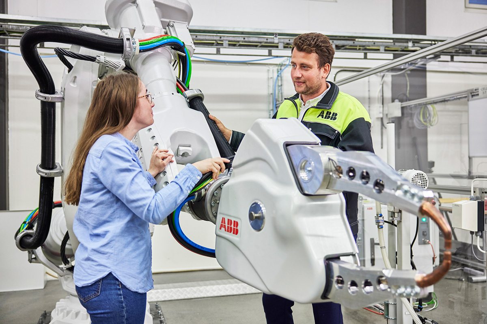

Built for smarter operations.
Driven by real-world automation.
IntelRobotics helps manufacturers, warehouses, and logistics teams design more efficient, reliable, and scalable operations through practical robotics and intelligent automation systems.

Since 2011, IntelRobotics has been helping businesses turn complex operational challenges into practical, measurable automation solutions. We work with teams that need more than just equipment: they need systems that improve flow, strengthen safety, and support long-term productivity.
Our approach combines robotics expertise, production insight, and thoughtful engineering to create solutions that fit the realities of modern manufacturing and logistics. From industrial automation to autonomous material handling, we focus on systems that are dependable, scalable, and easy to integrate into day-to-day operations.
We believe the most effective technology is the kind that removes friction without adding unnecessary complexity. That is why we design solutions around performance, adaptability, and long-term value for the people and businesses using them every day.